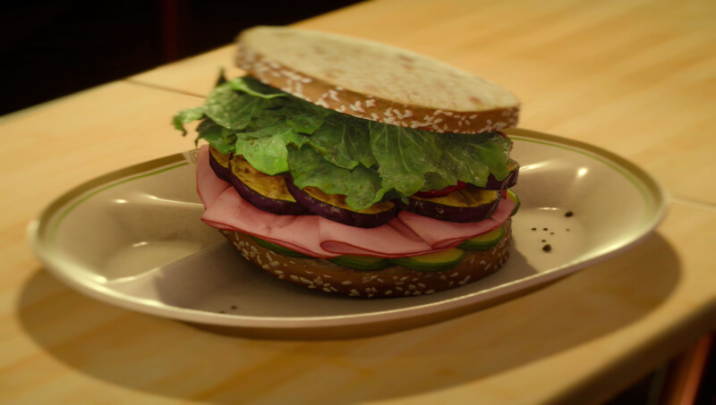

Home
Multi-Meat Sandwich
Active cooking time: 30 mins | Total cooking time: 1 hour | Serves 2

This sandwich provides quite the experience (boost)!
Ingredients for garlic aioli (can be made up to a day prior)
- 2 cloves garlic, minced
- 1⁄4 tsp salt (.5g)
- 1⁄2 cup mayonnaise (120mL)
- 2 tbsp extra virgin olive oil (30mL)
- 1 tbsp lemon juice (15mL)
How to (garlic aioli)
Grind garlic and salt in a bowl until garlic has become a pulp. Add
mayonnaise, olive oil, and lemon juice. Stir and leave in the refrigerator
until you're ready to use.
Ingredients for grilled eggplant
- 1 eggplant cut into 1⁄2 inch thick disks (12mm)
- 2 tsp salt (5g)
- 2 tbsp olive oil (30mL)
- 1⁄2 tbsp fresh parsley, minced (2.5g)
- 1⁄2 tbsp fresh rosemary, minced (2.5g)
- 1⁄2 tbsp fresh thyme, minced (2.5g)
How to (grilled eggplant)
- On a plate, lay out a few layers of paper towels. Place the slices of
eggplant onto the plate and coat liberally with salt on both sides.
Top with more paper towels and let sit for 30 minutes; occasionally
pressing on the slices.
- Rinse with cold water and dry with more paper towels. Coat slices
liberally with oil and sprinkle the herbs onto both sides.
- Using a grill or grill pan, cook the eggplant, flipping it when it
begins to take on brown grill marks, every 3 minutes or so.
Ingredients for sandwich
- 4 slices multi-grain bread, for 2 sandwiches
- sliced red onion
- 1⁄2 lbs turkey breast (225g)
- 1⁄2 lbs deli ham (225g)
- avocado, coated in lemon to reduce browning
How to (sandwich)
Assemble with garlic aioli and grilled eggplant, and enjoy!
Effect(s)
HP +100, EXP +20%
Source